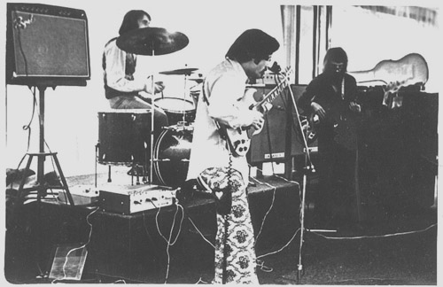
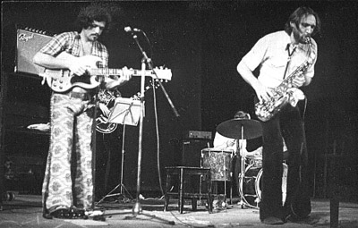
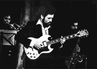

ВТОРОЕ ДЫХАНИЕ:" Играем Хендрикса…" |
В любой книге о московской рок-тусовке начала семидесятых можно найти упоминание о группе "Второе дыхание". В те далекие времена она по праву считалась самой техничной и наиболее искушенной в музыкальном плане командой, способной "один в один" играть самые сложные гитарные композиции и даже вносить в них что-то свое, оригинальное и интересное. За это группу полюбили рок-фэны, а музыканты-ветераны до сих пор вспоминают, как лихо шла короткая, но яркая карьера этого коллектива.
 Появилось "Второе дыхание" в 70-м году на факультете журналистики МГУ. Тогда встретились и стали играть вместе гитарист и певец Игорь Дегтярюк, басист Николай Ширяев и барабанщик Максим Капитановский. Уже первые концерты вывели их в лидирующую тройку столичных групп, а Дегтярюк безоговорочно стал гитаристом номер один, получив титул "русского Джимми Хендрикса". Затем судьба разбросала музыкантов - Капитановский играл в "Машине времени", затем ушел служить в СА. А Ширяев и Дегтярюк так хотели играть вместе, что упросили блестящего барабанщика из группы "Удачное приобретение" Михаила Соколова поиграть с ними. Обновленное "Второе дыхание" просуществовало всего три месяца - после одного из рок-сейшенов по Москве пронесся слух о том, что КОМСОМОЛ не хочет, чтобы "Второе дыхание" выступало… Тогда Дегтярюк и Ширяев встретили Алексея Козлова - именно вместе они создали новую группу, которую по идее Алексея Семеновича нужно было назвать "Наутилус". Но судьба вмешалась вновь - друзья убедили ветерана-джазмена Козлова назвать группу "Арсенал". С таким названием эта группа существует и поныне. Но уже без Дегтярюка и Ширяева. Долгая история группы изложена здесь по публикации в "Московском комсомольце". Фотографии из личного архива Игоря Дегтярюка. |